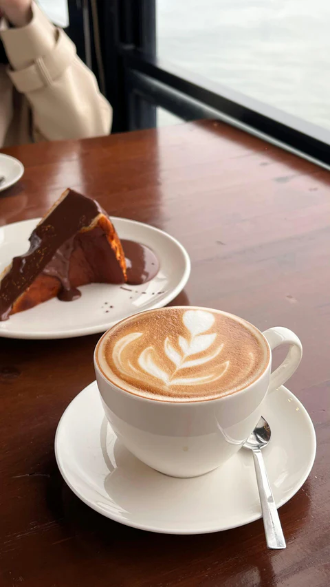
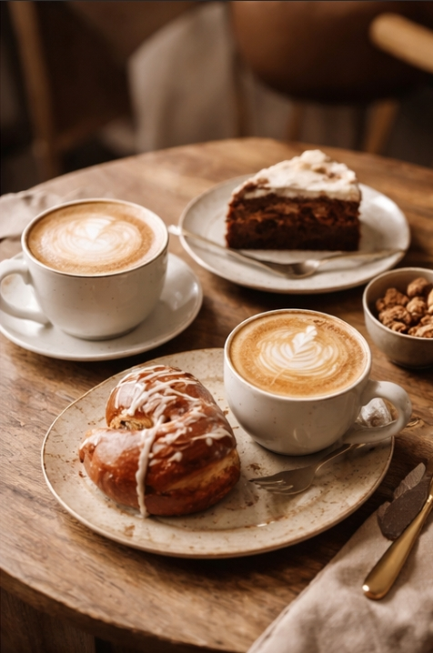

Sobre Nós
Onde o tempo desacelera e o café abraça.
O Café da Esquina nasceu de um desejo simples: criar um refúgio no coração do bairro onde o relógio não corre tão depressa. Acreditamos que o café é muito mais do que uma dose de energia; é o pretexto perfeito para uma conversa sem pressa, o combustível para uma ideia nova ou o abraço quente em uma tarde de chuva. Nossa essência é artesanal. Do grão selecionado, moído na hora, aos bolos com gosto de receita de vó que saem do nosso forno, tudo aqui é feito com tempo e afeto.

Feito para o seu momento
Seja para focar no trabalho com seu notebook, para rir com amigos em uma mesa de canto ou apenas para ver a vida passar pela janela, preparamos um ambiente que combina o conforto de casa com a sofisticação de um café especial.
